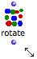

Elementary Manipulations
This section provides information about specific commands regarding the manipulation of items within patches. Specific details are given for each box type in Boxes and Patch Components.
Selection and Resizing
Boxes are selected using standard mouse selection. A selected box shows a bold border.
|  Selected boxes. |
Most patch editor commands apply to every selected boxes in the current window.
 |
|
Move / Copy / Align
To move an item around in a patch editor :
- drag and drop it with the mouse
- select it and use the four
→keys. AddSHIFTto move items faster.
Boxes can also be moved or copied from a patch editor to another.
- Drag and drop the item to move it.
- Add the
Altkey to copy it. - Use the usual commands and shortcuts –
Edit / Copy,Paste,Duplicate...

To align all selected boxes automatically, press SHIFT + a .
Delete
To delete selected boxes :
- press
Backspace, - select
Edit / Clear - Cutor pressCmd+x.
The Undo command can be used for restoring deleted boxes – not their connections. It can only apply to the last action that was executed.
To cancel an action :
- select
Edit / Undo -
press
Cmd+z.
To display an overview of the main patch editor commands :
- choose
Help / Editor Command Keys
- type
hin an open patch editor.